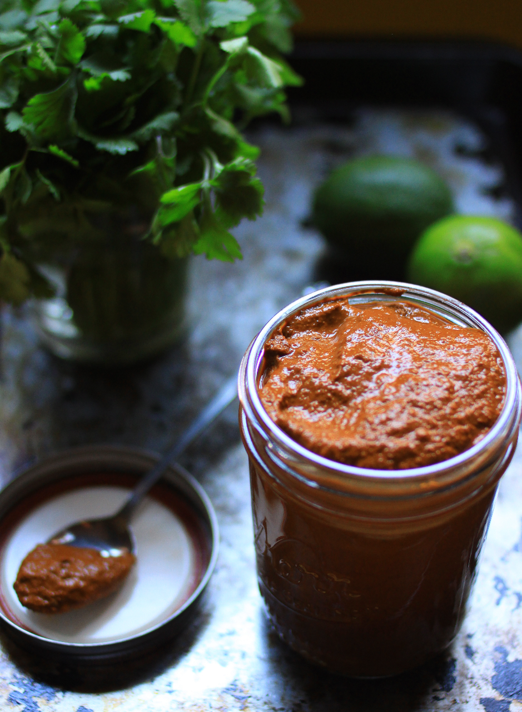

¡GuajilloPepita!

Chili & Pepita Mole sauce
Who doesn't love a mole sauce with their tamale?
ingredients
- 1 c raw pepitas
- 6 ancho chiles
- 6 guajillo chiles
- 1.5 c water
- 1 tsp salt
directions
- toast chiles in oven @ 350 for ~3 minutes
- toast pepitas for ~4 minutes on a skillet
- blend with water & salt to taste